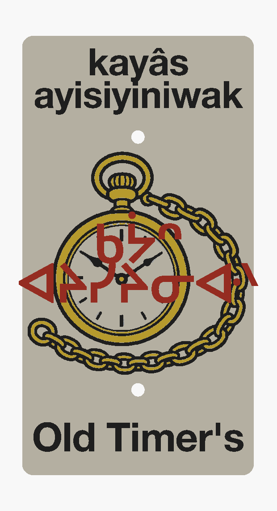

"old-time people"

Screenprinted antique pocket watch on a multi-colour 3D-printed plaque bearing kayâs-ayisiyiniwak in transliteration and syllabics.
The plaque reads kayâs-ayisiyiniwak — “old-time people.” It joins kayâs “long ago, old-time” with ayisiyiniwak, the plural of ayisiyiniw “person, human being.” Where English squeezes an apostrophe-s onto “Old Timer,” the Cree name names the collective: the folk of earlier days, not a single possessed trail.
In builder slang, “Old Timer's” often carries a wink at Old Timer's disease — the colloquial name for osteoarthritis, stiff joints and creaky knees on the bike. Alternates like kisêyiniw omeskanaw “the old man's trail” or kisêyiniwak omeskanawâw “the elders' trail” lean into that singular-elder reading. The plaque widens the frame instead: kayâs-ayisiyiniwak honours the old-time people as a community — respectful and nostalgic rather than a body-part joke.
The sign icon is an antique pocket watch (screenprint), ticking the same theme: measured time, age, the long-ago folk whose paths this river-valley network still follows. In Central Edmonton (South) the trail sits in a dense cluster of named meskanaw — past Walters Folly (waltor okakêpâtisiwin), Ray Gun (wâsêskotêw-paskisikan), E.M.P. Blast (pîwâpisk-pâhkitêw), Six Shooter (nikotwâsik-paskisikan), Edmonton Queen (amiskwacî-okimâskwêw), and the Walterdale and Emily Murphy access spurs — a neighbourhood where every corner carries another story.
This sign sits on ᓀᐦᐃᔭᐤ ᐊᐢᑭᕀ Nêhiyaw-Askiy — Plains Cree territory, Treaty 6, and a homeland of the Métis Nation.
A 285 m ribbon in Central Edmonton (South) with about 9 m of descent and 2 m of ascent — a short connector in the Walterdale reach, easy to stitch into longer link-ups through the surrounding named trails. Tap through to Trailforks for the full map and GPX track.
Explore the trail on Trailforks, with a local preview from the uploaded GPX.
kisêyiniw 'old man, elder' + omeskanaw 'his trail'.
kayâs 'long ago' + ayisiyiniw 'person'.
Plural elders' shared path.
| English | SRO | Syllabics |
|---|---|---|
| old-time people (on the plaque) | kayâs-ayisiyiniwak | ᑲᔮᐢ ᐊᔨᓯᔨᓂᐘᐠ |
| the old man's trail | kisêyiniw omeskanaw | ᑭᓭᔨᓂᐤ ᐅᒣᐢᑲᓇᐤ |
| trail of the old-time folk | kayâs-ayisiyiniw meskanaw | ᐊᔭᔭᐳᔭᐤ ᒣᐢᑲᓇᐤ |
| the elders' trail | kisêyiniwak omeskanawâw | ᑭᓭᔨᓂᐗᐠ ᐅᒣᐢᑲᓇᐤ |
SRO uses ê î ô â. Syllabics match the SRO shown.
Dialectal preferences may affect minor spelling choices; check local norms for signage.
References: itwêwina, Online Cree Dictionary, Plains Cree Dictionary
Each sign is 3D printed in Edmonton. Want one for your own trail, cabin or wall? Email hello@nehiyomtb.ca.